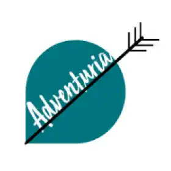

Autres projets
-

« L’esclavage noirs aux États-Unis » Léo Blondin -
« Maximus, la vengeance par les jeux du cirque » Rémi Vivant -
« Alice : Entre rêve et folie » Adrien Gaborit -
« Hommes et nature » Marie Blanc -
« Toujours plus. » Baptiste Vivot -
 « Adventuria » Emilien Poulet -
« La société de consommation » Léo Generet
-
« L'ascension » Lucas Picard
-
« Intelligence Artificielle » Valentin Bosch-Cano
-
« L’horreur dans l’art » Valentin Gainnet